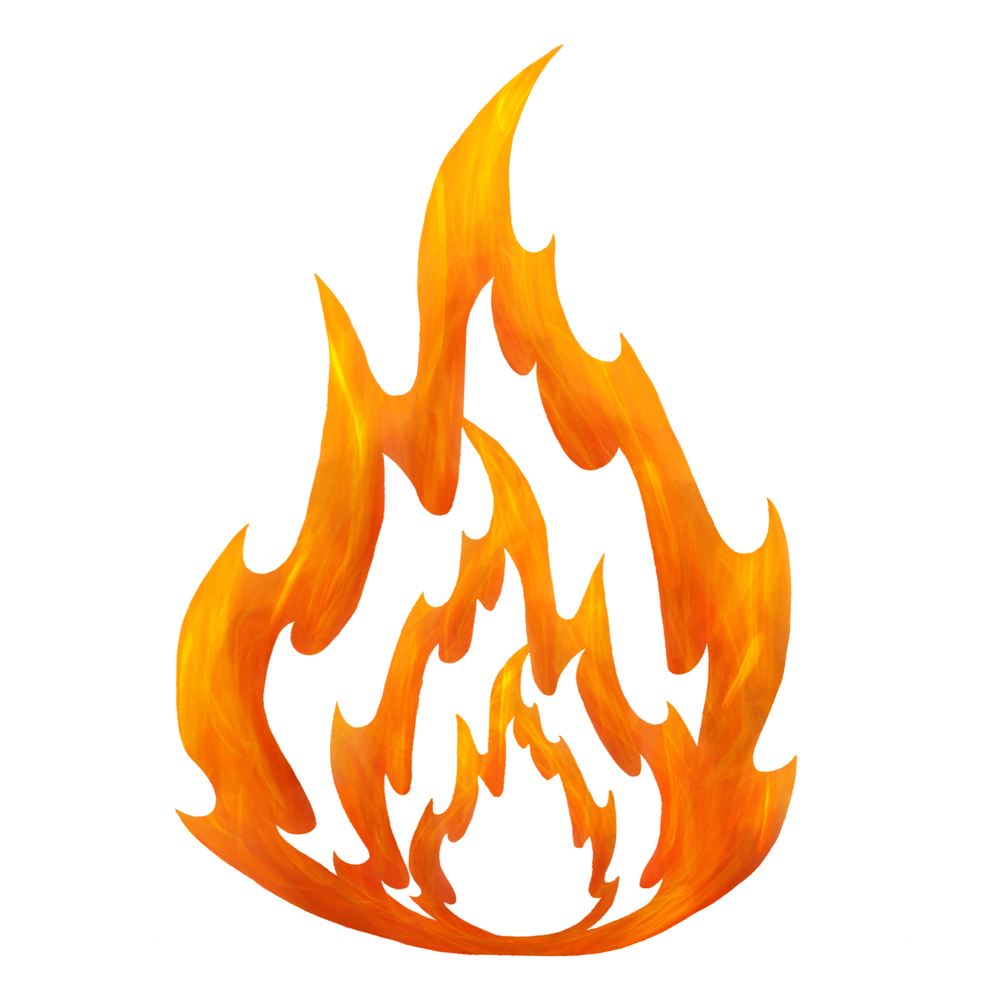
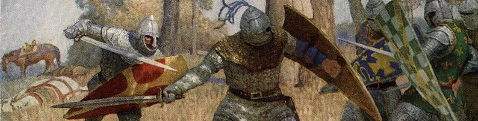

<section>
    <mat-toolbar color="primary">
        <div class="logoShell">
            
            <h1 class="header" routerLink="./">Bonfire Combat Counter</h1>
        </div>

        <div class="imageShell">
            <div class="imageGradient"></div>
            
        </div>
    </mat-toolbar>
    
    <router-outlet></router-outlet>
</section>